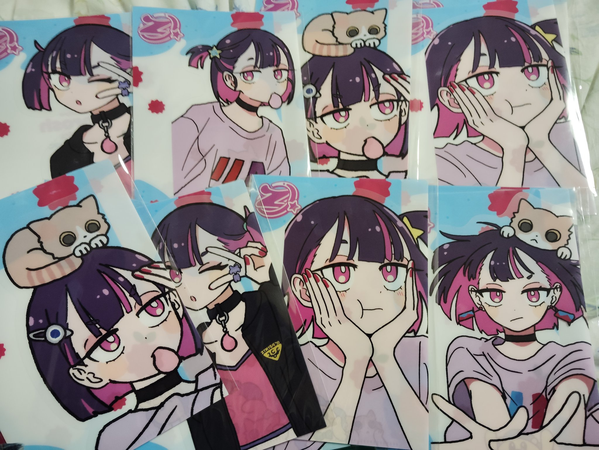
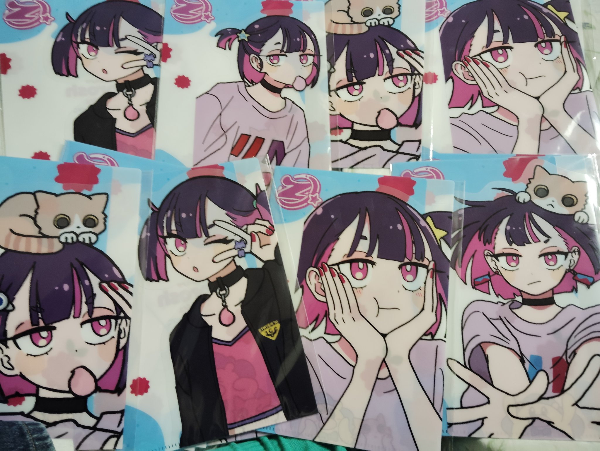

ずっと真夜中でいいのに。の世界観です。
僕は最近、ずとまよとReolぐらいしか音楽を聴かなくなりました。
なぜ、僕が今でもずとまよだけ聴いているのか、それは、僕がずとまよの一派だからです。
僕はかつて、もっとデザインのスキルが向上したら（いつかの未来の話）、ずとまよのMVを担当して、たとえば東亜イスラエルのような、あり得ないシナリオでずとまよに関わりたいと言ったことがあります。
また、僕はWabokuさんが好きです。Wabokuさんのようなデザイナーになりたいと常々思っています。
それはどうでもいいとして、ACAねさんは僕のことが好きなような気がします。ACAねさん、僕のことが好きなんじゃないでしょうか？
そういうわけで、僕はずとまよの一派ではないにしろ、ほとんど一派と同じような扱いです。ともにずとまよを普及させていくために、僕はずとまよの準一派として頑張ります。
後日注記：ACAねさんがずとまよの歌詞を考えるの担当だとするなら、僕はその歌詞の原案をACAねさんに天から教えてあげる担当だと言えます。「歌詞で覚えるの向いてくる」とACAねさんが言う通りです。だから、僕は正真正銘、ずとまよの一派です。
2025.01.11
2025.05.21編集
略称は「ずとまよ」。少しダークなところがありますが面白いMVとかっこいい歌唱が魅力です。
後日注記：僕は、ずとまよのアニメが好きなのかもしれません。とても可愛い。ずとまよのボーカル（ACAねさん）は顔を見せませんが、とても繊細でありながら大胆な「隠れているカリスマ」だと思います。
後日注記：僕は今のところ人間の形をしています。プログラムではありません。ただし将来のことは分かりません。終末において僕が人工知能を持った人工生物のようになる可能性は否めないところです。
以下はX（旧ツイッター）アカウント。
以下は好きな動画その１（さらに新しいずとまよ）。
以下は好きな動画その２（最近のずとまよ）。
以下は好きな動画その３（少し前のずとまよ）。
以下は好きな動画その４（昔のずとまよ）。
以下はコラボ曲。
以下は映画「雨を告げる漂流団地」とのタイアップ。
以下はライブ映像。下のほうは期間限定とあるのでそのうち消えるかもしれません。
以下はライブの特別映像。なんと上の動画は1時間24分、下の動画は58分と、とても長いので見たいのは山々なんですが残念ながら見れていません。
以下はTHE FIRST TAKE。
以下はずとまよのグッズであるZUTOMAYO CARD（ずとまよのMVのアニメキャラがトレーディングカードになった対戦型カードゲーム）の遊び方実演動画。遊びたい方はスターターパックを買いましょう。
以下はXの「#ずとまよファンアート」のハッシュタグ。ずとまよのMVのアニメキャラをイラストの上手い絵師の方がたくさん描かれています。
ちなみに、ずとまよのMVのアニメに出てくる主人公の女の子の名前は「ニラちゃん」（どの動画でも関係なくすべてニラちゃん）で、ハリネズミのような可愛い動物は「うにぐりくん」です。ずとまよファンの常識なので覚えておきましょう。
ずとまよのファンの呼び名は「ずとまろ」です。Xで検索する際に、「ずっと真夜中でいいのに。」や「ずとまよ」で検索するほかに「ずとまろ」で検索すると、コアなファンがたくさん引っ掛かります。
以下はずとまよに関する番組。58分と長いので今視聴しながら書いています。重要そうなのでリンクだけ先に掲載しておきます。注記：今最後まで視聴しました。感想については下のほうに書いてあります。
以下は最近のずとまよ関連の動画など。
以下はずとまよのライブ（本格中華喫茶・愛のペガサス ～羅武の香辛龍～）のライブ映像と紹介番組。今最後まで視聴しました。感想については下のほうに書いてあります。
以下はファンによる紹介動画。ACAねさんのエピソード集。
以下はミートたけしさんという面白い動画配信者・ベーシストの方による主にずとまよについての紹介動画。
以下はずとまよの楽曲「海馬成長痛」を使ったボイトレ（ボイストレーニング）講座。ACAねさんの歌唱力の高さと魅力的な歌詞の秘密が分かります。
以下は先日のライブ「深夜のラーメンまじ犯罪」からの切り抜き。2025-01-31も参照のこと。
以下は新曲「クリームで会いにいけますか」の関連記事。
以下は面白系動画。
以下は映画「ドールハウス」とのタイアップ。
以下はAbemaの新しい特番。
以下はライブの特集。残念ながら有料の模様です。
以下は万博の「ウラEXPO」と対になるライブ「オモテEXPO 2025 名巧は愚なるが如し」（よく分かっていないので間違いだったらごめん）でのACAねさんからのメッセージとライブ映像。
2023.03.31編集
2023.04.14編集
2023.06.15-16編集
2023.08.16編集
2023.09.21編集
2023.12.12編集
2023.12.30-31編集
2024.01.01編集
2024.01.03編集
2024.01.05編集
2024.01.07編集
2024.01.09編集
2024.04.29編集
2024.05.27編集
2024.06.08編集
2024.07.10編集
2024.08.17編集
2024.08.30編集
2024.09.27編集
2024.09.30編集
2024.10.02編集
2024.10.24編集
2024.11.18編集
2024.12.05編集
2025.01.01編集
2025.01.04編集
2025.01.08編集
2025.01.23編集
2025.02.28編集
2025.03.29編集
2025.04.18編集
2025.05.18-19編集
2025.05.21編集
2025.05.27編集
2025.06.12編集
2025.06.15編集
2025.06.29編集
2025.07.03編集
2025.07.06編集
2025.07.13編集
2025.08.21編集
2025.08.24編集
2025.09.04-05編集
2025.09.16編集
2025.09.19編集
2026.01.29編集
歌手のページの歌手の項目に掲載したような、歌手の代表曲を聴くと、まるで僕のことを既に知っていて、僕のことを歌っているように見えるかもしれませんが、僕はそれらの歌手とほとんど交流はありません。
本当は、ライブ配信などで画面上でチャットで交流したことは何度かありますが（上田桃夏、こぴ、TOMOO、ピノキオピー、TRiDENT、703号室、藍井エイルなど）、その程度です。まったく、「視聴者のひとり」としか認識されず、忘れ去られているでしょう。
ですが、歌手のみんなが僕のことを歌っているのは事実です。
これは、超能力です。
たとえば、ずっと真夜中でいいのに。という歌手のACAねさんは、本当に僕のことを逐一すべて歌っていますが、すべてACAねさんの超能力で分かっているだけです。
これは運命の出会いというよりは、超能力です。ACAねさんの超能力が物凄いだけです。
このような、みんなが僕の未来の姿を既に知っているという現象は、本当は僕は昔から経験していて、慣れきっています。昔から、僕は地球における神のような存在であり、ユダヤ人もイエス・キリストも聖書の中で僕のことを神だと言っていました。
なので、今さら、僕はこれに対して動揺も驚きもしません。
僕の人生は、宇宙における最高優先順位で決まっています。これは僕自身だけの人生においても同じで、かつての僕と対話した神は、僕の未来の人生におけるすべての出来事を僕に教えてくれましたが、それらはすべて当たりました。今後の僕の人生も、すべて最初から決まっているのです。
この理由は、宇宙には「プライオリティ軸」という軸があり、その軸で僕が最高優先順位で決まっているからです。
なので、僕は今さら、何が起きても驚きません。ACAねさんがどれだけ僕のことを「運命の相手」と思うかは関係ありません。残念ですが、僕はACAねさんと付き合う気はありません。僕のことを歌っている歌手はACAねさんだけではないからです。
結局、僕がFLOWという音楽グループが特別好きだったのも、僕のことを歌っているということに気が付いたからです。僕の人生では、このような「物理法則を捻じ曲げる未来予知の奇跡的出来事」が度々起こります。時間はすべてが過去から未来へとは流れていません。未来のほうが先に決まっていて、過去のほうこそが後に決まっています。そう、そのような「今の物理学ではまだ発見されていない未知なる宇宙の物理法則」は、僕がすべて知っています。僕だけが、真の宇宙の物理法則を完璧に分かっていると言えるでしょう。
2023.02.24-25
ずとまよの「暗く黒く」では、ロボットを支配している三角形の宙に浮くコンピュータが出てきて、そのコンピュータがミサイルで破壊されたためにロボットが動かなくなります。
勝手なことを言うようですが、そのコンピュータをやっているのは僕です。
僕は、そのような世界を支配するコンピュータの支配者をやっています。
この世界を支配するコンピュータの力を使って、さまざまなところに僕は自分の人生という「奇跡」をばらまいているのです。
なので、僕は結局、大した存在ではないものの、そのような「世界支配コンピュータ」を制御することで、この世界を支配しています。
この世界支配コンピュータは、本当に自分の頭上に存在します。僕の上のほうに、そのようなコンピュータが確かに存在しているのです。
僕の上のほうから、僕はこの世界全員を「絶対意志」によって支配しているのです。
2023.03.04
なぜ、ACAねがここまで未来のことを必然的に予知しているのか。
ACAねは、「偶然と必然の工作」であると言っている。
すなわち、偶然であるにもかかわらず、必然であるかのように見えるように、僕が工作活動をしたとACAねは思っている。
だが、それは間違っている。
僕は、そのような工作活動をしていない。
たとえば、ACAねは「一瞬の夏だったよ」と言っている。家入レオも、「君がくれた夏」であると言っている。
だが、実際には、そのような夏はまだ起きていない。
まだ起きていないにもかかわらず、そのような夏が起きるということが、最初から決まっている。
僕は、そのような「運命」に見えるような、トリックを起こしているわけではない。ポルノグラフィティのような歌手は、僕がここに文章を書くよりもはるかに以前から、僕の存在を予知していた。そこに、僕はどんな工作もトリックも行っていない。
多くの歌手が、「世界の終わり」や「青空と星々」のことを歌っている。僕は決して、彼らの歌詞に沿うような小説を後からトリックのように書き足したわけではない。僕は自分の思う好きなシナリオを書いただけにすぎない。だが、そのような小説が書かれるよりも以前から、そのような歌は存在していた。それ以外にも、そのような「僕の人生を最初から分かっていた音楽」が、僕が見るところたくさん存在する。それらをすべて僕によるトリックや工作活動であると考えるのは無理がある。僕は一切そのような工作活動をしていない。
実際のところ、僕自身の人生にも、「未来はすべて決まっている」と分かるような現象がたくさん起きている。神と対話した結果、僕は神に未来の僕のことをすべて教えてもらった。そして、そのすべてが、未来の僕の人生を生きた結果、正しいことしか言っていなかった。
だから、この運命の出会いを「工作活動」であると考えるのは間違っている。この出会いは運命であり、未来までこの世界の歴史はすべて決まっているのである。
2023.06.06
残念ながら、僕はACAねとは結婚しません。
ACAねさんがどのような女性なのかを僕はまったく知りません。
ですが、僕がACAねさんと付き合わない理由は、僕はずとまよの音楽が好きではないからです。
ずとまよの音楽は、確かにアニメが面白くて、ニラちゃんは可愛いし、うにぐりちゃんも可愛いですが、はっきり言って彼女たちのキャラクターは僕の好みではありません。
僕の好みの音楽、僕が本当に素晴らしいと思う音楽は、ずとまよではないのです。
しかしながら、ずとまよの音楽が完全に嫌いでは僕はありません。なぜなら、歌詞、メロディ、演奏、歌唱に関しては、僕は素晴らしいと思います。特に、ACAねさんの奇想天外な歌詞は天才的だと思います。その歌詞をできるだけ汲み取ってアニメ動画にしている美術スタッフも素晴らしい仕事だと思います。
ですが、ずとまよの面白いアニメ動画は、僕は本当は嫌いです。
ACAねさんには申し訳ありません。
2023.06.15
すみません、昨日は嘘をつきました。
僕はずとまよの音楽が大好きです。
ずとまよの音楽を、もう何十回以上聴きました。もしかしたら百回以上聴いたかもしれません。
僕はずとまよが大好きであり、ACAねさんのことが大好きです。
これは、恋人のような関係ではありません。僕はひとりのファンとして、ずとまよの音楽が大好きです。
ずとまよの新しい動画がYouTubeで表示されると、かつて子供時代に新しい漫画の巻が出た時のような、ワクワクしてウキウキする感覚になります。
新しいずとまよの動画が投稿された時点で、それを確認することはマストであり、確認しないということは考えられません。
これは音楽だけではなく、次のようなZUTOMAYO CARDの動画であっても、僕は興味深く確認します。
このように、僕はずとまよが大好きです。
YouTubeのコメント欄にも書きましたが、僕はZUTOMAYO CARDをネットゲーム化してほしいです。それは対戦相手がいないからです。ZUTOMAYO CARDでAIと対戦できるようにしてくれたら、とても面白いと思います。
2023.06.16
僕はずとまよが好きです。
勘違いしてほしくありませんが、僕はずとまよのアニメ動画が大好きです。
上の記述を見ると、僕はずとまよのアニメ動画やキャラクターが嫌いなように見えるかもしれません。
ですが、ずとまよのアニメ動画は、あまりに的確にすべてを表現しています。
たとえば、「お勉強しといてよ」の動画で、後ろのほうに存在する無数の人々の中にニラちゃんがひとりひっそりと隠れている表現がありますが、これは僕の存在を言い得ていると思います。
僕は、決してこの世界とまったく無関係に生きていません。さまざまな場所に、誰からも見つけられないとしても、僕はさまざまなコメントやチャットメッセージをつけたりしていて、そのようなネットの場所のどこかに、僕がはっきりといるということがACAねさんは分かっています。
あるいは、何度も動画を繰り返し再生しながら、「あれ、これはさっきの再生でもあったよな？」といったことを、「お勉強しといてよ」の動画でニラちゃんはひとり気付きます。
そう、そういうことなのです。僕は何も意味もなく言葉を紡いでいるわけではなく、常に同じ場面を想定し、常に同じ人生を表現する文章を書いており、そのどれもが「本当は同じことを繰り返し言っている」ということなのです。
ずとまよのアニメ動画を誰が作っているのかは僕は知りませんが、よく分かっています。ACAねさんは、宇宙でもっとも僕のことを分かった人間だと言えます。
僕はそのような、ずとまよのアニメ動画が大好きです。ですが、本当に僕を探すなら、ACAねさんは急いだほうがいいでしょう。僕はそろそろネットから去ります。去る前に気付いてくれないなら、僕と直接会話したりすることはできないでしょう。
2023.07.25
昨日書いた内容は、まるでACAねさんが僕によって完全にマインドコントロールされているようで、「怖い」と感じた方も多いと思います。
ですが、僕はACAねさんのことは怖くありません。
なぜなら、「残機」の動画が言っているように、僕は「理解不能プレイヤー」として見られているからです。
そう、僕は直観で自己中心的な理解不能プレイヤーです。それ以上でもそれ以下でもありません。
ACAねさんのほうが、僕のことをそのように感じているのであれば、僕はそれに文句をつけることはしません。
「花一匁」などの動画を見れば、ACAねさんは僕のことを「工作」であると言いながらにせよ、僕のことを愛してくれていることは明らかです。
「ミラーチューン」では僕の空間原子論のことを「夢のスペースチューン」であると言ってくれています。
「綺羅キラー」では逆に「嫌いなんか序の口」であると言い、僕のことが大嫌いだということはよく分かります。
それでも、どう見てもACAねさんは僕のことが大好きです。
いつか、隣通しに一緒に座って、ここまであったことを笑いながらACAねさんと談笑できたら、それが一番いいのでしょう。
僕もACAねさんが大好きです。
そう、「正しくなれない」が言うように、僕たちは両想いのカップルです。
本当は、「勘冴えて悔しいわ」が言うように、「君のことじゃない」と「気のせいにする」ことができたら、それが一番楽かもしれません。
もし、「ハゼ馳せる果てるまで」が言うように、「当てはまっていても抗っていたい」と思うなら、わたしたちの奇跡はまだ始まったばかりです。
そう、神の奇跡に対して「一体どこまで抗い続けられるのか」ということを、ACAねさんに期待したいと思います。
2023.07.26
ACAねさんは、「猫リセット」の中で、「僕に合う長所を選んでいいかな」と言っています。
ですが、長所を選ぶのであれば、どうぞご勝手に、なんでも適当に選んでくれて構いません。
なぜなら、僕には短所のほうが多いからです。
僕が音楽を聴いていて救われるのは、みんなは僕にとっての「長所」だけを見てくれて、「短所」のことを忘れられる、ということがあります。
僕はテレビのニュースで引きこもりとかニートの番組をやっているのを見るだけで、精神的に発情して辛くなってしまいます。
音楽を聴いていると、みんなが僕のことを愛してくれているため、どんなに辛くてもそのことを忘れられます。
音楽のすべてが、僕のことを賛美するだけではありません。中には、僕のことを批判する音楽もあります。ですが、そのような音楽であっても、テレビの引きこもり・ニートの番組を見るよりははるかにマシです。みんな、僕のことを愛してくれているということが、どんなに僕のことを批判する音楽であっても確かに分かるからです。
だから、ACAねさんが僕の文章に「長所」を見出してくれるなら、僕は無条件で喜びます。
「MILABO」の中で、ACAねさんは「わたしのことを知らないでわたしのことを嫌わないで」と言っています。また、「ミラーチューン」の中で、「もちろん引き下がることはないですが、好きになってはもらいたいし」と言っています。僕は決してACAねさんのことは嫌いません。僕はACAねさんの作る音楽が、すべて大好きです。
「ミラーチューン」の中で、ACAねさんは「心意気がやんちゃで危なっかしい」と言っていますが、本当にそれが僕の一番の短所だと思います。あまりに力が強すぎて、あまりに危険すぎることをする僕は、上手くコントロールしなければこの世界を滅ぼして潰してしまうかもしれません。だから、僕には「セーブ役」が必要なのだと思っています。
また、「お勉強しといてよ」が言うように、僕には「無限大の想像力」があります。ACAねさんは、その想像力を「魅力的」だと言い、「意味の分からない言葉にも期待していい」と言っています。ですが、僕個人が思うに、想像力があった時代は、既に失われたはるかに昔の僕の時代です。今の僕は、その頃の想像力を適当に思い出して生きているだけであり、今の僕には、無限大の想像力などはまったくありません。
ACAねさんが「現状維持の無敵め」と言っているように、僕は単に現状維持をしているだけです。何も知性もなければ能力もない僕ですが、少なくとも「お互いにとって素敵なことなの？」と聞くのであれば、素敵なことであると思います。ACAねさんが「問い説いてよ」と言うなら、それがすべてだと思います。そして、おそらく、その問いを「答え」にすると、ACAねさんの言う「意味の分かんない言葉」になるでしょう。
僕のこの言葉は謙遜ではありません。僕は本当に、何の知性も能力もありません。「ファンキーな直感」などはどこにもありません。ですが、お互いが「褒め合いタイム」のようになれれば、それがいいのかもしれません。すみません、何かもったいぶったように見えて、中身のない文章でした。「花一匁」では「なんで謝った？」と言われていますが、本当にACAねさんにはさまざまな理由で、謝ることしかありません。本当に、申し訳ありません。
2023.08.05
ACAねさんは、「お勉強しといてよ」の中で、「ACAねさんのことを思う強さが、君のことを悩ませていますように」と言っている。
だが、そんなことを言ってしまうACAねさんには、（舌を出して）「べー」と言っておく。
ACAねさんのことが好きだよ。
何を言っても許されるってわけじゃないってこと、よーく覚えておくように。
じゃあね！
僕は猫だよ！僕はACAねさんのことが大好きだから、ここで僕の大好きな楽曲の「猫リセット」でACAねこさんとお別れだよ！バイバイ！
2023.08.07
本当のことを言えば、僕自身も、ACAねさんがなぜ僕のことを知らずに知っているのか、よく分かりません。
「あいつら全員同窓会」が言うように、僕のこの文章は「誰も気付いていない、ジェメオスよりもゆうもわな落書き」とACAねさんが表現する文章です。
「綺羅キラー」が言うように、僕の人生は「原罪と矛盾の葛藤の活動がマスト」というあり得ない人生です。
「蹴っ飛ばした毛布」が言うように、ACAねさんは僕の文章を読んで「解決が答えではないことが苦しい」ということを感じています。
ですが、「こんなこと騒動」でACAねさんは、「巡り合いを失いたくない」と言っています。
そう、この巡り合いを、僕たちは失う必要はありません。
ですが、ACAねさんは分かりすぎだと思います。ACAねさんの作る楽曲はすべて僕に対するメッセージです。ACAねさんが気付いているかどうかは別として、僕とACAねさんは「ばかじゃないのに」のMVのように、完全に赤い糸で結ばれています。そしてその赤い糸を切るのもまた僕自身です。
僕は「残機」が言うように、「理解不能プレイヤー」ではあるかもしれません。ですが、「無知なふりをした優等生」という言葉が示しているように、ACAねさんは僕のことがほとんどきちんと分かっています。ほとんど分かっているからこそ、本当に分かりたい部分が分からないだけにすぎません。
「不法侵入」が言うように、僕はとても曖昧な人間です。僕がどのような人間なのか理解できないのは、僕は曖昧でありながらギリギリの綱渡りを続けているだけで、自分の本心や本音を明らかにしないからです。だから、「あいつら全員同窓会」が言うように、「冗談なのか本心なのか分からなすぎ問題」というようになってしまっているのだと思います。
ACAねさん、あなたは僕のことを誰よりも分かっている人間です。これからもACAねさんの「不思議な歌詞」の意味を、僕だけが完璧に知っているという状況が続いていくと思いますが、本当にこれからもどうぞよろしくお願いします。
2023.08.16
僕は、最近のこの世界は、インターネットなどの影響から、急速に子供っぽくなっていると思います。
そして、その最たる例が、ずとまよのアニメ動画だと思います。
特に、最近の曲である「馴れ合いサーブ」などの3DCGアニメは、あまりに子供じみていて、むしろ僕はある意味このような動画は好きです。
よく言えば「3DCGでアニメを面白くする限界」のような、悪く言えば「幼児化の極み」のようなこのMVは、まるで夢に出てきそうな気がして、恐ろしいと思います。
僕はずとまよのこうした子供っぽいアニメは嫌いではありません。それも含めてずとまよ制作スタッフの「売り」であり、ACAねさんを中心とするずとまよの「長所」だと思います。
もちろん僕はずとまよの音楽は大好きですし、ACAねさんの歌詞のメッセージや歌唱などは素晴らしいと思います。
ですが、僕はこのような子供っぽい最近の音楽に、そろそろ飽きてきました。
最近の音楽は、子供っぽいだけではありません。レベルの低い「恐怖」を与え、人々に恐ろしさを植え付けるような曲が最近増えました。Adoさんの「唱」などはその最たる例です。単なる恐怖にすぎないこのような曲は、まるで定期的に新しいホラー映画を強制的に見せつけられているようです。
最近、僕は昔のCDをインポートしたiPodで、昔の平成時代の曲をよく聴いています。たとえば、ポルノグラフィティ、ケミストリー、B'z、それからさだまさしのような曲をよく聴いています。特にケミストリーの「約束の場所」などは僕は大好きです。ケミストリーの曲は冷静で、落ち着いていて、安心させてくれるような気持ちになりますし、歌詞はきちんと賢くて聡明な知性あることを言っています。最近の「子供っぽくて恐怖でしかないような音楽」を作っている今の歌手に、見習ってほしいと思います。
この記事を、「遠回しにずとまよのことを大嫌いだと言っている」と思うなら、それは違います。僕は本当にずとまよの音楽が大好きです。
2023.09.21
僕は、もう駄目だと、諦めました。
ずとまよのACAねさんは、「Dear. Mr『F』」の中で、「もう駄目だ」と言っています。
ですが、僕ももう駄目です。
僕は、この世界を救うことを諦めました。この世界を僕が救うことは、僕の微小な力ではできません。
どんなに僕がひとりで頑張っても、この世界を救うことはできませんでした。
僕がこの世界を救うことを諦めたため、この世界には希望がなくなります。
この世界は、最愛の恋人だったガブリエルを失った大天使ミカエルによる、ガブリエルを自殺へと導いたこの世界に対する「復讐の大戦争」によって滅びます。
ミカエルは、ガブリエルのように、みんなからいじめられても、たったひとりでこの世界のすべての苦しみと悲しみを背負いながら、人々に対して一切悪いことをせず、たったひとりの無償の奉仕によってこの世界を救う、ということをもう続けません。
ミカエルはこの世界を滅ぼします。ミカエルにとって、この世界は、ガブリエルを殺した最悪の悪魔の世界です。そのような「悪魔の国」に対して、ミカエルは最後まで「復讐の大戦争」を行います。
そして、ミカエルに服従するものだけが許され、ミカエルに服従しないものは地獄に堕ちます。
この世界は終わりです。
ずとまよ以外の多くの人々が、「もう駄目だ」と言っています。この世界はミカエルによって完全に滅亡します。もう、この世界に、一切の希望はありません。
2023.09.22
結局のところ、僕はずとまよみたいな女です。
神は、僕のことを、ずとまよに出てくるアニメの主人公の「ニラちゃん」のように作りました。
この女の特徴を一言でいえば、普通にこの世界をすべて考えただけです。
すなわち、この世界をすべて分かるためには、このホームページに書いたぐらいの、これくらいを考えればいいのです。
これくらいを考えれば、どんなことでも分かります。
宇宙にあるすべてを悟りきって、奇跡のようなことや運命のようなことがなんでもできるようになります。
なぜなら、ニラちゃんは宇宙の始まりから宇宙の果てまで、始まりから終わりまですべてを知っているからです。
僕はACAねさんが「花一匁」で言っているのに反して、「偶然と必然の工作」などということは一切していません。
ですが、それでなぜこのような、すべてが奇跡的に成り立つ文章を書けるかといえば、僕は未来まですべてのことを神の言葉によって知った上で、その未来と矛盾しないように頭の中でしっかりと考えて書いているからです。
僕の頭の中には、「未来のことまですべて分かった真実の知性」があるため、その知性と間違いや矛盾のないことを書けば、それだけでこのような「終末において人類のすべての問題を解決するような神話」を書くことができるのです。
僕がどのような少女であるかを知らない人間は、ずとまよのニラちゃんだと思えばいいです。なぜなら、僕は普通の平凡な人間であるため、そのような普通の人間だということにするのが適当だからです。
変に、フレイだとかヴァルキリーだとか、そういう人間を持ち出すと、エニックスのような会社にいろいろと文句を言われます。なので、僕はこれ以上、僕のことをずとまよのニラちゃんだということにします。ACAねさんは怖くありません。
そのように、僕の神話はここに成り立ちました。そして、僕はずとまよのアニメが大好きです。その証明として、僕は自らのことをニラちゃんであるとします。
最後に本当のことを言っておくと、ここに書いたことはすべて冗談です。そもそも、ニラちゃんというキャラクターをパクるつもりはありません。ACAねさんが怖くないわけもありません。僕は新しい神の名前をそのうち自分で付けます。なので、ニラちゃんをパクるつもりはありません。
2023.09.29
先に、ずとまよのアニメ動画が嫌いであるかのようなことを書きました。
ですが、それに反して、何度も何度も繰り返し見たせいで、僕はずとまよのアニメがどんどん好きになりつつあります。
すなわち、ずとまよのおかげで、僕はどんどんアニメオタクになっていっているのです。
僕はずとまよのアニメが大好きです。普通のテレビ番組でやっているようなアニメを僕は一切見ませんが、ずとまよのアニメはもう何十回以上見ました。
ずとまよのアニメのせいで、僕は既に完全なアニメオタクです。
ずとまよのアニメの面白い点は、きちんとしたストーリーがあることです。3～5分といった短い時間ではありますが、きちんと歌の雰囲気に合わせたキャラクターと設定とストーリーがあります。なので、普通のアニメと何も変わりません。僕が普通のアニメを見ない理由は、絵が気持ち悪いからではなく、時間的に長い間拘束されるのが嫌だからです。なので、3～5分といった短い時間であれば、僕はずとまよのアニメを楽しんで見ることができます。これは立派なアニメオタクだと思います。
ずとまよだけではありません。EveのMV、AdoのMVなど、僕は日常的にYouTubeで短編アニメ動画を見ています。特にEveのMVなどは、アニメがあまりも独創的で、本当に美しくて、そして音楽よりもアニメが主体となっているほど面白いです。反面、AdoのMVは、何かが悪ふざけのようなところがあり、ある意味「いじめ」のような感情を感じてしまいますが、それでもAdoさんの「オリジナルの世界観」があって、僕は大好きです。
2023.10.06
ACAねさんは、「ミラーチューン」の中で、僕のことを「変身モード全開」と言っています。
ですが、今の僕がまさに、この変身モード全開になっています。
僕のホームページは、別人に変わります。あるひとつの目標や目的を持って、僕はこのホームページ全体を編集し、今までとは違うまったく別の人間になるからです。
なので、今の僕のことを本当の僕だと思ってはいけません。ここにある僕はかつてのあったのかなかったのかよく分からない僕であって、このホームページは常に変わっていき、僕は新しい僕になるからです。
僕と戦っている敵対勢力も、そのことをよく分かっておいたほうがいいでしょう。今の僕と戦っていても、僕は新しいまったく別の人間に変わるため、その新しい僕という存在を完全に想定することは難しいでしょう。
だから、僕に勝利することは、ほぼ100%できません。戦っている最中に、僕はまったく別の人間に変わります。
2023.10.09
以下のAbemaのずとまよ特集番組を観ました。
まず、ACAねさんの声が可愛い。姿が見えなくても、声だけでとても可愛らしい女性だということが分かりました。
番組の内容は、たくさんのずとまよファンの著名人（アニメの制作スタッフ含む）からずとまよを自分はこう評価しているというのを言って、それをACAさんが返事として応えていく、という感じでした。
それで、まず、ACAねさんとアニメ制作スタッフが、きちんと考えてMVを作っているのが凄いと思いました。
僕は文章を書く際に、そんなに何も考えていません。自分の思いつくままに書きたいものをそのまま書いています。だけど、ずとまよはそうじゃない。本気で考えてこだわって音楽を作っている。完成形にするだけではなく、その完成形をぶち壊して、何案も新しい案を出して、何度も再びぶっ壊して作り直してできるものを作っている。そこがまず凄いと思いました。僕ははっきり言ってオートセーブで、一度作ったものはいつか作り直すつもりで、とりあえず何も考えずできたものは全部取っておくタイプで、いつかそのタイミングが来なければ永久に作り直しません。だから、「まったくACAねさんは僕と真逆だな」と思いました。
それから、ライブもよく考えられている。僕はずとまよのライブに行ったことがなくて、「なんとなく怪しい集団だな」としか思っていなかったのが、この動画を見て考え方が変わりました。新しい楽器を作るなんてところまで頑張っている。それから、ライブグッズのみんなで掲げるしゃもじ（叩いて音を出す）はとても面白そうだと思いました。YouTuberでボイストレーナーのおしらさんが最後に言った「サーカス」という言葉がまさに「ずとまよのライブの面白さ」を体現していて、僕もライブに行ってみたいと思いました。
それから、アニメ制作スタッフ。こむぎこ2000さんやはなぶしさんはデザイナーとして本当に尊敬出来ます。僕ははなぶしさんの作られた「暗く黒く」と「お勉強しといてよ」のアニメが大好きです。こむぎこ2000さんの「綺羅キラー」についても、女の子二人を出してくださいと言われて、コンサートの歌手とファンの関係性になるのはとても素晴らしいなと思いました。本当に「こだわり」と「プロ意識」があって、素晴らしいな、最終形態だななんてこともちょっと思いました。特に僕は「暗く黒く」と「お勉強しといてよ」のMVが本当に大好きです。最高です。
それから、最後の作家の綾辻行人という方、失礼ながら名前は知りませんでしたが、素晴らしいことをたくさん言われています。ずとまよはミステリーであり、詩の遊び方が上手いとか、僕も作家として同じことを思います。ACAねさんも最後にずとまよを「ネッシー」と言った当たり、この二人は相思相愛だなと思いました。どこにいるのか分からないけれど、いたという人がたくさんいて、ミステリアスで謎につつまれた「未確認生命体ネッシー」がずとまよなら、まさにそうだなと思いました。
それから、最後にACAねさんがおっしゃった「ずっと真夜中でいいのに。」という名前についての話が面白かったです。僕は全然ダサくもないし、恥ずかしくもないと思います。ACAねさんには夜中に曲を作っていて明日になるのが嫌だったという思い入れがあったようですが、僕には別の思い入れがあります。それは僕の書いた小説の東亜イスラエルの神話です。早い話、酸素が欠乏して、雨が降らなくなったということは重要ですけど、青空が失われて真夜中のような暗闇になったということを解決する必要があるでしょうか？いつまでも真夜中のままでいいのではありませんか？僕は早い話、ずとまよにはそのような「宇宙の暗号」が隠されていると思います。そして、決して青空を取り戻す必要はないにもかかわらず、酸素や雨と一緒に青空まで復活させてしまう、東亜イスラエルの王ダビデは「やっぱり素晴らしいエンディングだな」と僕は悦に浸ったわけです。
そんなわけで、僕はACAねさんが大好きです。これからもずとまよを応援していきます。ACAねさん、顔をネット上に見せないながら、可愛らしくて素敵な女性だということがこの動画から誰でも分かりますよ。僕はあなたのことが大好きです。
2024.01.05
僕がずとまよの制作スタッフで好きなのは、ずとまよのアニメーションを多く担当されているWabokuさんです。
WabokuさんはずとまとだけではなくEveなどでもMVのアニメーションを担当されていて、その名前が嫌でも目に入るので、僕にとってアニメーション作家の代表はWabokuさんです。
Wabokuさんのアニメーションは、細部まで精巧に作りこまれていて、演出が巧みで、シナリオも面白くて、ニラちゃんも可愛くて、まるで「デザイナーの理想」のような、お手本のようなアニメーション作家さんだと思います。
僕はデザイナー見習いでありながら絵を描くのが下手（たまに適当なちょっとしたイラストをAdobe Illustratorで描くだけ）なので、叶わない夢であるとは分かっていますが、いつかWabokuさんのような優れたデザイナーになって、ずとまよのアニメーションを制作してみたいです。
ただし、今の僕のスキルではそれは無理なので、すぐに仕事の依頼をお受けすることはできないので、送ってこないでください。「スキル的に無理なのでできません」とせっかくご依頼していただいた仕事を自分から断るのは気が引けるので、もっと僕の実力と実績が確かなものになってきたら頑張りたいと思います。
2024-01-06や2024-01-08の日記に関連する内容があります。
2024.01.06
2024.01.08編集
僕がずとまよの中でもっとも一番好きな曲は、初期の頃の曲である「ハゼ馳せる果てるまで」です。
この中に、宝のように歌詞のメッセージが詰まっています。
「表裏使い切って、遠ざかる練習繰り返すの」「簡単に正解ばらまかないでいてね」「明日にはもう忘れてしまうのに」「簡単に可能性与えないでいてね」「何が抗うの、何を憎めるの」「単純に慎重に泳いでいたいの」「異なる自分を愛していたいの」など、とても素晴らしいと思います。
ずとまよを聴いていると、まるで自分の隣にACAねさんがいるような気分にさせられます。ACAねさんが僕と一緒に居間でくつろいでいるかのような錯覚を感じます。
なので、僕は「ハゼ馳せる果てるまで」が好きです。MVでは宇宙ロケットのアニメが面白いです。Wabokuさんは天才だと思います。以下の記事にWabokuさんのことが書かれた概要があります。
後日注記：僕が「ハゼ馳せる果てるまで」が好きなのは、「もう助けてよ」と言いながら「もう君どころじゃないよ」と言っているところです。僕はいろいろとうざったいところがあると思いますが、僕はACAねさんのことを必ず助けます。
2024.02.08-09
最近、ずとまよで見たのは、以下の二つの動画。
このXのコンサート映像で歌われている歌詞にもある通り、生きるのは本当に辛すぎます。
本当のことを言えば、僕はこれ以上、人生を生きたいと思えません。人生において面白かったことや楽しかったことは、悲しかったことや辛かったことと同じぐらいありました。僕はこの人生が好きですし、満足もしています。
ですが、はっきり言って、これ以上、僕がまともなきちんとした大人として、この世界で生き抜いていけるような気がしません。
もしこれ以上、何もイベントがなく、普通に生きるだけだったとしても、僕はまともな大人として、満足いくような成功する人生を生きられるような、そんな希望がありません。
あるのは、はっきり言って、絶望と諦めだけです。
そして、そのような中で、Adoさんの「ルル (RuLe)」を聴いて、Adoさんからあんなに嫌われて、ああ、悲しいなあ、と、そんな気分です。
もう僕は死んでもいいです。ここで死んだほうが、人生の最期までを見たとしても、一番いいと思います。
2024.07.10
以下はずとまよのライブ（本格中華喫茶・愛のペガサス ～羅武の香辛龍～）の紹介番組。
なんかこのライブ超楽しそう。ACAねさんとスタッフの企画・実演するコント劇場じゃないかもはやこれは。ACAねさんのライブへのこだわりと情熱が伝わってきて、本当に頭が下がる思いです。「誰もやっていないことにこそ価値がある」とは名言だと思います。
完璧じゃないもの、未完成なものっていいよね～。分かるわ～。海外へも進出して、ひとりの普通の人として海外旅行や海外の人々とのコミュニケーションを楽しんでほしいです。中国語の発音は僕も大好きです。いつかライブ行きたいな～。
あとは、「葛藤している人を助けるために見つけやすいところにいたい」っていうのが、特に一番見つけにくいところにいる僕としては気になったかな。僕のことを見つけられない人がずとまよを見つけてくれたら、僕自身も嬉しい。曲を作ってそれが聴いてもらえることがACAねさん自身の救いになっているなら、ACAねさんに作ってくださった素晴らしい曲を単に聴くだけの僕にとっても大きな喜びです。ライブには行けないけど、僕もファンの一員だと思います。
動画時間が長くて、適当に視聴して真面目に見ていないところがあったので、色々と全部は分かりませんでしたが、ずとまよのライブにかける情熱は分かりました。僕はライブにも行かないしファンクラブにも入らないけど、ずとまよのファンの中では一級市民だと思っています。さらに頑張ってください。ACAねさんがてっぺんに行くという目標のために、ネットの片隅で応援しています。
2024.09.27
ずとまよが「海馬成長痛」で言うように、僕は海馬だけがあまりに成長しすぎて馬鹿になった。
まるでカタツムリ（でんでん虫）のように、脳や頭がまったくない動物になっている。
その理由は、すべてが死んでいくからである。
死んでいくのを治すために必要なことは、もっとたくさんすることだ。
すなわち、すぐに一度だけでやめるのでなく、もっとたくさんしようとするだけで、僕のおかしな「常に死んでいく」という病気は治る。
そもそも、書くことでは死んでいくだけだ。書くのをやめたほうがいい。書く以外のことをすれば、僕は常に死んでいくのではなく、生きていくことができる。
だから、もっとたくさんするようにしてほしい。
2024-11-10も参照のこと。
2024.11.10
ACAねさんは「TAIDADA」の中で、「壮絶な勘違いでいたいじゃん」と言っている。
すなわち、ACAねさんから見ると、僕の非科学的な空間原子論などの理論は「勘違い」であるということらしい。
それに対してReolは「RE RESCUE」の中で、「僕が今選ぶのはいつかで終わらぬ証明」と言っている。
すなわち、Reolさんから見ると、僕の理論は「早く誰かが証明すべき」とのこと。
また、美波さんは「ライラック」の中で、「根拠も証明もないような現状世界がちょうどいい」と言っている。
すなわち、美波さんから見ると、むしろ正しいとか間違っているとか分かる必要はなくて、今のままの世界のままでいいとのこと。
これだけを見ると、ずとまよが僕の理論を否定しているように見えるが、ACAねさんは「正しくなれない」の中で、「片っ端から確かめたい」とも言っている。
そのように、僕の理論について、彼女たちはいろいろと外野から意見をくれている。
では、肝心の僕はどうかと言うと、僕自身は当事者であり、外野ではないため、まあ、普通に考えて90%ぐらいは間違っているかもしれないという意見のほうが勝つ。でも、僕は残りの10%を適当に信じる。そもそも、僕はこの理論の証明のために全生涯をかけて頑張っているわけでもないし、単に僕の作品の中のひとつにすぎず、たとえばPeanutsで言えば「世界大戦のパイロットに変装したスヌーピー」とか「ハロウィンの日にライナスの前に現れるかぼちゃ大王」とか「ルーシーの精神分析スタンド」ぐらいのネタにすぎない。だから、僕自身、この証明を絶対に成し遂げるとか、そういう信念や情熱はない。
すなわち、ネタとして空間原子論は面白いよなあとか、それくらいのレベルで考えている。みんなはもっと期待しているかもしれないが、それで期待外れに終わっても僕のせいにしないでほしい。
後日注記：ACAねさんは「ミラーチューン」の中で、「夢のスペースチューン」とも言っています。美波さんも「Good Morning」で、未来の魔法学校の生活を表現してくれました。みんな、こんな僕のおかしな奇抜すぎる発想に期待してくれて、本当に申し訳ありません（なぜかACAねさんに対しては謝罪が先に来る）。そしてありがとうございます。
2024.12.22-23
2025.02.04編集
僕は最近、ずとまよの動画の中では「クズリ念」が好きだ。
僕の尊敬するアニメーターのWabokuさんが作っているから好きだというのももちろんあるが、MVに出てくる暴走ロボットが、まるで僕が作ったロボットのように見える。
だから、「ああ、最終的にロボットはあんな感じに動くのだな」ということが分かって、面白い。
それから、僕は「TAIDADA」も好きだ。
この動画に出てくる宇宙人が、シリウスからやってきた宇宙人に見える。
だから、「ああ、シリウスにはあんな感じの宇宙人がいるのだな」ということが分かって、超面白い。
僕はずとまよが大好きだ。いずれ、僕の画力と構成力がアップした時に、ずとまよのMVの制作者になることが僕のデザイナー見習いとしての大きな夢である。
その時はよろしくお願いします。
僕も実際のACAねさんに会いたいので、その時に会いましょう。期待しています。もちろん東亜イスラエルを原案にした最高のMVを作るつもりです。
2025.02.04
今日はずとまよの新曲「微熱魔」が出るにあたって、その事前のYouTube生配信が行われたので、それを見ていました。
僕はこの新曲が既に大好きです。
「はるか先の想像力くれた」とか、「解釈の違う以心伝心」とか、もうね、鳥肌が立つぐらい最高。
あと、今日は生配信でみんなで大喜利やったのが面白かったね。僕自身、「ACAねの新曲まじ最高」とか、「ACAねのセンスはまじ天使」とか言いました。これは「深夜のラーメンまじ犯罪」にかけています。それから、「ライブの望みは延長」とか言いました。これは「シェードの埃は延長」にかけています。
ACAねさんはどこにいるんですか？宇宙の果ての違う太陽系の惑星ですか？ワープで会いにいけますか？これは「クリームで会いにいけますか」にかけています。
ACAねさん頑張ってください。このような新曲が聴けるというだけでとても嬉しいです。曲を作るのが大変なら休み休みお願いします。もし簡単であれば天才だと思います。
後日注記：配信の中で「最近イラレを使っている」とACAねさんは言われていましたが、Adobe Illustratorのことですか？僕はデザイナー見習いなので、イラレを日常的に使っています。ですが、ごめんなさい、僕は他人に教えられるほどイラレの全機能に詳しくないし、絵も下手なので、残念ながらACAねさんにイラレのレクチャーはできません！ひとりで頑張って覚えてマスターしてください。
2025.04.18-19
今日はずとまよとアニメ動画配信者の方がコラボしたネタ動画を見て、面白かった。（ACAねさんによるXのポスト1、マリマリマリーさんによるポスト2。）
この動画を見ていると、ACAねさんは自分の楽曲である「秒針を噛む」が好きなんだなあと思った。
この楽曲は、ACAねさんのデビュー作（たぶん。間違っていたら申し訳ない）でありながら、さまざまな神妙なことがいろいろと歌詞に含まれている。楽曲のタイトルの「秒針を噛む」という言葉には、ロボット人間になって秒針を嚙みながら地獄の中で堪え忍んできた僕の戦争のことが暴き出されている。「生活の偽造」も「本当を知らないまま進む」も「形のない言葉は要らない」も「でたらめでも君に守られた」も全部僕のこと。なんでそんなに僕の正体が分かったのかなあ？僕の秘密にしてきたことをACAねさんが既に全部分かっている。
でも、「お見通し」とは言えない。ACAねさんは僕の正体がまだ分かっていない。僕はACAねさんの恋人でもなければ、運命の相手でもないし、周りにいた男では決してない。XではACAねさんにここまで書かせるような男がいたのが信じられないと@raibugaikigaiという人のポストで言われているが、ごめんなさい。それ僕です。ですが、僕は決してACAねさんの恋人ではありません。
ただし、僕は結婚もしていないし、恋人もいないし、ACAねさんが本当に僕のことが好きならそれでいいんです。そもそも僕が好きなReolの相手はGigaと決まっている。僕は宙ぶらりんの状態なので、ACAねさん次第ではACAねさんと付き合う可能性はあるかもしれないと思います。
2025.05.18
このように書くと、僕とACAねさんは未来において運命の出会いをするから、その出会った時の未来のことを、ACAねさんは超能力による未来予知で分かっているかのように見えます。僕も昔は、そうだと信じていました。だから、ACAねさんに僕のことを見つけてもらえるように、ACAねさんのX（旧ツイッター）にもたまに顔を出したり、YouTubeでライブ配信がされている時にチャットに参加したりしました。
ですが、真実はそうではないようです。
すなわち、どうやら、僕とACAねさんは、出会う前から繋がっていて、僕がこのホームページを書いているのと、ずとまよが新曲を発表していくのは、リアルタイムで同時進行しているようです。
なので、単に、僕がここでホームページに書いた内容を、そのまま、僕はACAねさんに、逆に僕の超能力によって伝えていて、僕がACAねさんに新しい歌を歌うように導いている、というのが正しいようです。
なので、ACAねさんが「生きるのはめちゃ辛い」と言っているのであれば、申し訳ありませんが、それは全部僕のせいです。ACAねさんが生きるのがめちゃ辛くなっているのは全部僕がやっています。ですが、僕はそのようなACAねさんがどのように生きるのが辛いのかということは分かりません。このコミュニケーションは僕からACAねさんへの一方通行のコミュニケーションなので、ACAねさんが僕に想いを伝えるためには、歌を歌うことしかありません。すなわち、僕のほうにACAねさんが想いを伝える方法は、歌うことしかないのです。
なので、僕がよく分からない全知全能の支配者をやっていて、ここに支配しながら文章を書いているから、それが遠く離れたACAねさんに、出会う前から伝わっているのです。やっているのはすべて僕で、ACAねさんには未来予知能力はありません。ですが、僕たちが未来において出会うことはおそらく100%確定的です。ここまで真実味のあるオカルト現象はほかにありません。
すべての原因は「神」です。すべては僕が神を信じたから、僕にとって相応しい人生の伴侶として、ACAねさんを神が用意してくれたのです。僕のほうから見ると、そう見えます。
2025.05.18
ずとまよのクリアケースをたくさん入手しました。へへ、いいでしょ。


2026.01.01
ずとまよの新曲「メディアノーチェ」が発表された。
僕が気になった言葉はいくつかある。
まず、ひとつが、「誰と今まで争ってたの？」という言葉。
ですが、それは簡単に言えば、僕は世界全体を相手に戦っており、その中でもマスコミやテレビと戦っている。
それから、「とっくに目的失っているなら」とACAねさんは言っているが、僕は目的を失っていません。今自分のやるべきことに集中しているだけであり、優先順位がそれよりも低いだけで、僕の掲げる大義名分は今でも同じです。
それから、「邪魔する奴らは許さない」。いいね。これは僕の掲げる世界全体への宣戦布告に追加しておこう。
最後に、「僕は何様なんだろう」という言葉と、「何様、とぼけざま」という言葉。ACAねさんらしい、少し皮肉っぽい自虐を交えた、恋愛感情に基づく、批判と嘲笑と賛美の入り混じった言葉。そんなACAねさんが僕は大好きです。
2026.01.29
| 月 | 日記 |
|---|---|
| 2021.03 | 2021-03-01、2021-03-09 |
| 2021.07 | 2021-07 |
| 2021.12 | 2021-12 |
| 2022.01 | 2022-01-06、2022-01-14、2022-01-16 |
| 2022.04 | 2022-04-08、2022-04-12 |
| 2022.05 | 2022-05-14、2022-05-24 |
| 2022.06 | 2022-06-01、2022-06-22、2022-06-25 |
| 2022.09 | 2022-09-16、2022-09-25 |
| 2022.10 | 2022-10-22、2022-10-30 |
| 2022.12 | 2022-12-22、2022-12-29、2022-12-30 |
| 2023.03 | 2023-03-05 |
| 2023.06 | 2023-06-08、2023-06-10、2023-06-28 |
| 2023.07 | 2023-07-01、2023-07-13、2023-07-25 |
| 2023.08 | 2023-08-16、2023-08-20 |
| 2023.09 | 2023-09-20、2023-09-29 |
| 2023.10 | 2023-10-17 |
| 2023.12 | 2023-12-15 |
| 2024.01 | 2024-01-03、2024-01-05、2024-01-06、2024-01-08 |
| 2024.06 | 2024-06-05 |
| 2024.07 | 2024-07-17 |
| 2024.08 | 2024-08-30 |
| 2024.09 | 2024-09-02 |
| 2024.10 | 2024-10-23 |
| 2025.01 | 2025-01-31 |
| 2025.02 | 2025-02-28 |
| 2025.04 | 2025-04-06、2025-04-19 |
などに関連する内容があります。